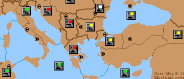
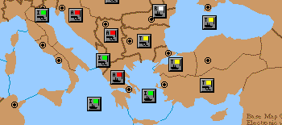
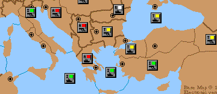

What other options are there? Well, in truth, none. Of all the countries in standard Diplomacy, I personally rate Italy as the most boring. If you don't agree, I am happy for you. Many moons back I drew the same short straw in an e-mail game and got "stuck with" Italy. I came up with a variation on a theme, which surprisingly gave me some success. I did feel a little sorry for the victim of my most excellent crime, but it would have been priceless to have seen the look on his fact. I call this variation "The Lepanto Bluff."
As you may have clued in by now, the variation I came up with based on the Lepanto. When you open with what smells like a Lepanto, Turkey can usually see it coming a mile away. The real question arises -- does Turkey have time to counter the Lepanto? Should the Lepanto fail, Italy has the unsavory task of picking on another power from a less than ideal starting position, or waste an entire game pressing on with a useless cause, unless Austria helps.
Now think of this possibility: what if a Lepanto is not a Lepanto, but is a disguise to some other devilish deed? That's great! But what am I talking about here? A Lepanto is aimed at Turkey. If the Lepanto is not a Lepanto, then it must be aimed at someone other than Turkey. Naturally, that could only be Austria. Turkey would be happy with this situation. The Sultan's load is a little lighter. So…
What then if the "Lepanto that is not a Lepanto" is not a non-Lepanto? It could be just about anything. Herein lies the foundation of the bluff. What am I talking about here? Well, let's move on and hopefully it will become clear....
We pick up our game narrative in the middle of the Lepanto attack. The position typically achieved in S1902M:

The Lepanto Position
The important observations here are that Austria has agreed to the Lepanto attack, and that Turkey has opened aggressively against Russia. In addition, during the spring turn the Austrian fleet bounced with the Turkish fleet in the Aegean Sea. Fairly typical stuff!
For the Lepanto attack to succeed, Italy needs to gamble with a convoy of the army from Tunis to either Smyrna, or Syria. Turkey can also gamble in the conduct of his own defense. Turkey can move the army in Armenia to either Smyrna or Syria. Alternatively, Turkey can defend both provinces by moving the fleet in Constantinople to Smyrna, and the army in Armenia to Syria. Egad! What is all this analysis? Get on with the Lepanto Bluff!
What we want to do now is now change course completely. The following moves will confuse just about everyone.
| Italy: | F EMS – Aeg F ION S F EMS – AEG A Tun H A Ven H |
Follow that up with in the next movement phase with
| Italy: | A Tun – ION – Alb F ION C A Tun – Alb F Aeg – Gre |
Voila!! We have given up the Lepanto and instead are attacking Austria, with Greece threatened by three Italian units.

Lepanto Bluff Prelude
Italy has completely changed course. He has abandoned the Lepanto and has instead initiated hostilities against Austria. Turkey feels a huge sigh of relief, and is greatly encouraged by the Italians choice of cannon fodder. Little does Turkey know that Austria is not the intended target.
Turkey is feeling positive. Austria is annoyed at you. What next? You strike a deal. Ally with Turkey. Turkey will be pleased by this, since he is free to resume his attack on Russia (and you encourage him to do so immediately). Austria has sworn mutually assured destruction and a few other colorful phrases. What does Italy do now? He bluffs everyone!
| Italy: | A Alb – ION – Aeg – Smy F ION C A Alb – Smy F Aeg C A Alb - Smy Turkey:
| A Smy – Arm | |

The Lepanto Bluff
Turkey's response: Ouch!
Austria's response: What!?
"Impossible!" you say? I thought so too...until I tried it. I was able to apologize to Austria for the ruse, mildly chuckle at bluffing Turkey, and complete the conquest of Turkey, keeping Austria a strong ally. What more can you ask for as Italy?
Generally, in Lepanto I find it difficult to press the advantage with an even half-competent Turkish player at the helm. Unless Austria lends a good deal of assistance or Turkey misplays, Italy has a hard time gaining the upper hand. By first bluffing Turkey into a false sense of security, I found it so much easier to come out on top.
Naturally, there is no perfect plan or course of action. Such is the nature of this great game. Here I presented just another idea to add to your arsenal of ideas. What you do with it is up to you. Just don't do it to me.
 |
Theo Kermanidis
(theok@eisa.net.au) |
If you wish to e-mail feedback on this article to the author, and clicking on the envelope above does not work for you, feel free to use the "Dear DP..." mail interface.